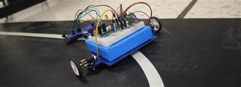
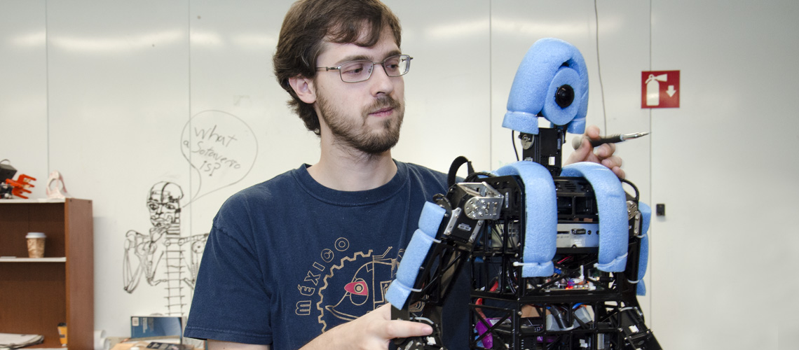

Ingeniería en computación
La ingeniería en computación estudia el desarrollo de sistemas automatizados y el uso de los lenguajes de programación; de igual forma se enfoca al análisis, diseño y la utilización del hardware y software para lograr la implementación de las más avanzadas aplicaciones industriales, telemáticas y científicas.
Es el área de trabajo que se concentra en el estudio de situaciones susceptibles de automatizar mediante el uso de sistemas de computación y componentes digitales, a fin de determinar la factibilidad técnica, la conveniencia operacional, la factibilidad económica y la evaluación de alternativas existentes para desarrollar la solución más adecuada.
La ingeniería en computación se ocupa de la naturaleza y características de la información, su estructura y clasificación, su almacenamiento y recuperación y los diversos procesos a los que puede someterse en forma automatizada. Se interesa igualmente por las propiedades de las máquinas físicas que realizan estas operaciones para producir sistemas de procesamiento de datos eficientes. Trata todo lo relacionado con la utilización de computadoras digitales.
La respuesta a las preguntas: ¿Qué es lo que puede ser eficientemente automatizado? y ¿Cómo se puede lograr eso de la mejor manera, sobre la base de los recursos disponibles?, compete a la ingeniería en computación.
 Origen de la ingeniería en computación
La historia de la computación puede remontarse a cientos de años atrás, cuando se creaban máquinas para ayudar en tareas de cálculos (como el ábaco). La primera calculadora mecánica fue creada en 1623 por Wilhelm Schickard, y Charles Babbage diseñó la máquina diferencial en la época victoriana. Todas las máquinas que se limitaban a realizar una sola tarea, o como mucho, algún subconjunto de todas las posibles tareas.
Las nuevas y poderosas computadoras comenzaron a ser desarrolladas durante la década de los 40, que es también cuando comenzó a hacerse evidente que las computadoras podían usarse para mucho más que simples cálculos matemáticos.
La masificación de la computación llegó de la mano de las computadoras personales a principios de los 80, y el acceso a la información mundial de la mano de internet, que comenzó su éxito en los 90.
Las ciencias de la computación tiene sus orígenes en 1920, cuando la palabra «computación» hacía referencia a los cálculos generados por la propia persona. Luego, con la llegada de las computadoras, la historia y el significado de este concepto se amplió, distinguiendo los algoritmos que forman parte del desarrollo de las soluciones.